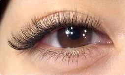

Eyelash extensions
オプション
- アイパック
- ５００yen
- 他店オフ
- １０００yen
カールの種類
- CCカール
-
1番カールが強く、横から見た際もしっかりとカールの様子が分かります。パッチリと華やかな印象に仕上がります。
- Cカール
-
定番のCカールは、ビューラーで仕上げたような自然なカールです。ナチュラルながらも、ぱっちりとした目元を演出します。
- Jカール
-
最も緩やかなカールです。自まつげとの密着性も良く、取れにくく、長持ちします。とても自然な仕上がりです。
エクステの長さと太さ
- 長さ
-
8ｍｍ～13mmの長さがお選びいただけます。自然な感じにしたい方は『8～10ｍｍ』。
華やかな印象にしたい方は『10～13mm』がおすすめです。
- 太さ
-
毛の太さは、0.1mm、0.15mm、0.20mmの3段階ございます。
お客様のまつ毛、目のサイズや形、またご希望の仕上がりに合わせてお選びいただけます。
1人1人に合わせた施術で“なりたい目元”へ。
